Короткий гайд для новых пользователей
Зачётка помогает держать учёбу в одном месте: предметы, задания со сроками, сессии с экзаменами, дипломную работу и файлы к ним. Она работает в браузере на компьютере и на телефоне, её можно установить на экран как обычное приложение.
Что внутри:
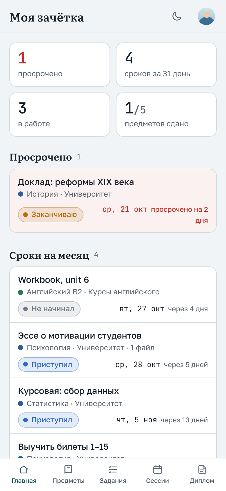
Зарегистрироваться можно только по приглашению. Его вам пришлёт администратор: ссылку или код.
В следующий раз входите по почте и паролю. Зачётка запоминает вход на устройстве, поэтому вводить пароль каждый раз не придётся.
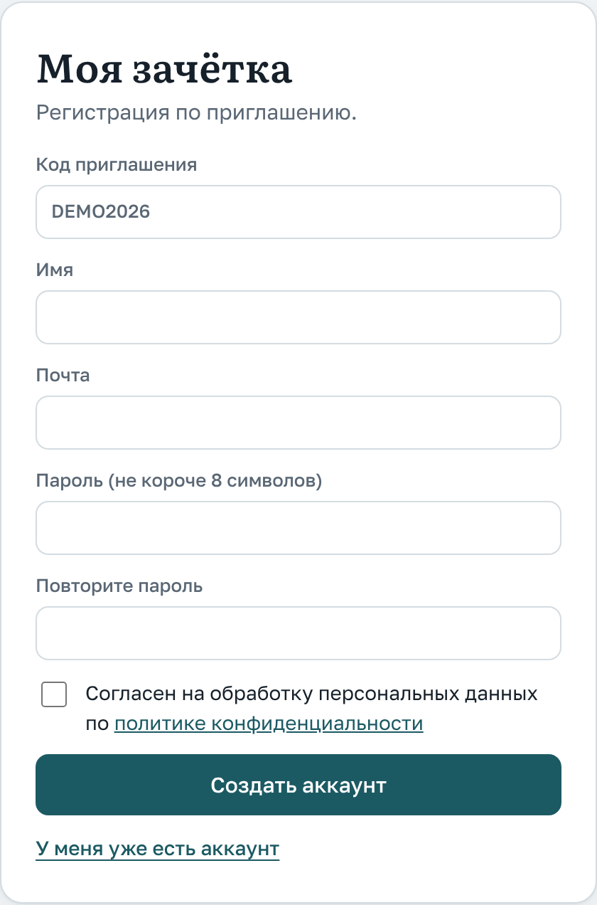
Экран регистрации по ссылке-приглашению
Главная показывает, что горит. Вверху четыре числа: сколько заданий просрочено, сколько сроков в ближайший месяц, сколько заданий в работе и сколько предметов уже сдано. Ниже идут списки: просроченное, сроки на месяц и задания в работе с далёким сроком. Справа ближайшая сессия с обратным отсчётом и ваш диплом.
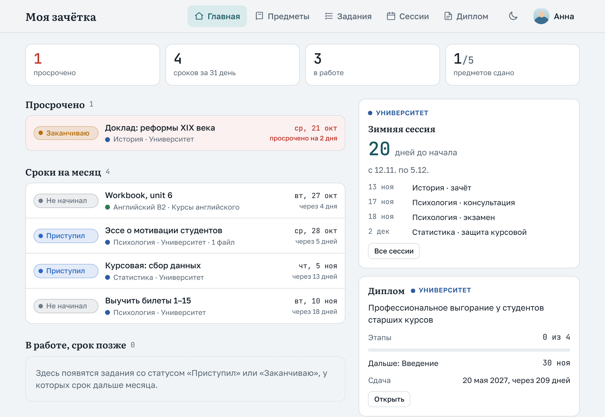
Главная: просроченное выделено красным, справа ближайшая сессия и диплом
С этого раздела стоит начать. Сначала добавьте учебное заведение («+ Заведение»): вуз, колледж или курсы. У каждого заведения свой цвет, по нему предметы и задания легко различать. Затем добавьте предметы («+ Предмет»): название, форму контроля, дату сдачи и преподавателя.
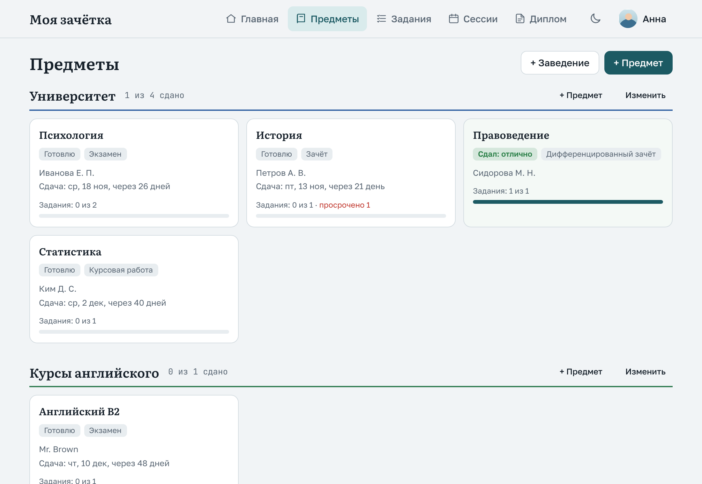
Предметы по заведениям: сколько сдано и сколько заданий сделано
Нажмите на предмет, чтобы открыть его страницу. Там всё по предмету вместе: заметки, экзамены из расписания сессий, задания и файлы. Когда сдадите, нажмите «Редактировать», выберите статус «Сдал» и впишите оценку.
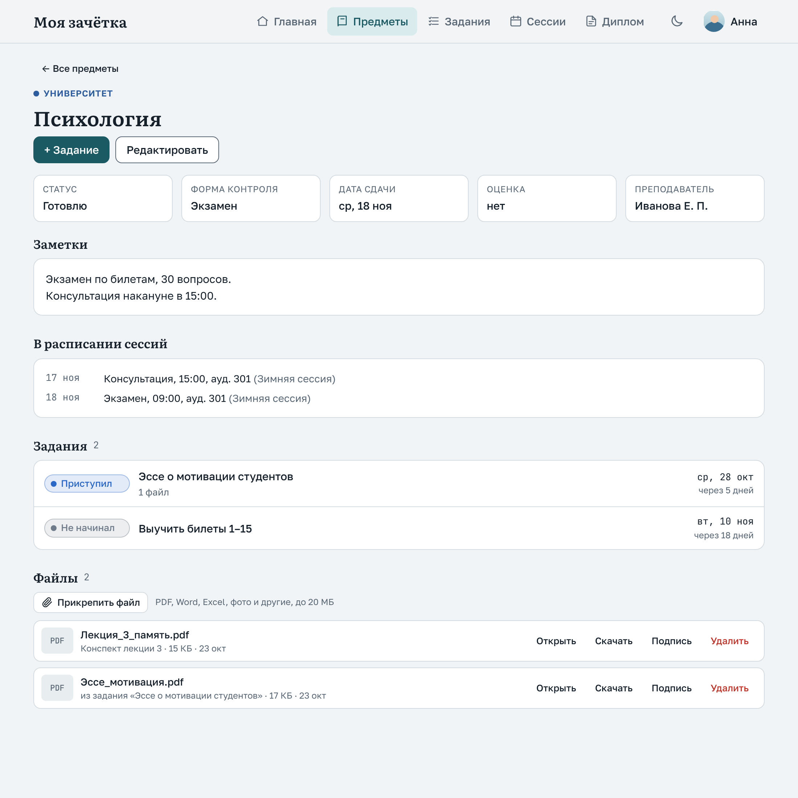
Страница предмета с заданиями и файлами
Раздел «Задания» собирает все задания по всем предметам. Фильтры вверху помогают оставить только одно заведение, один предмет или нужный статус, например только просроченные.
У каждого задания четыре статуса:
Чтобы сменить статус, нажмите на цветную метку слева и выберите нужный из списка.
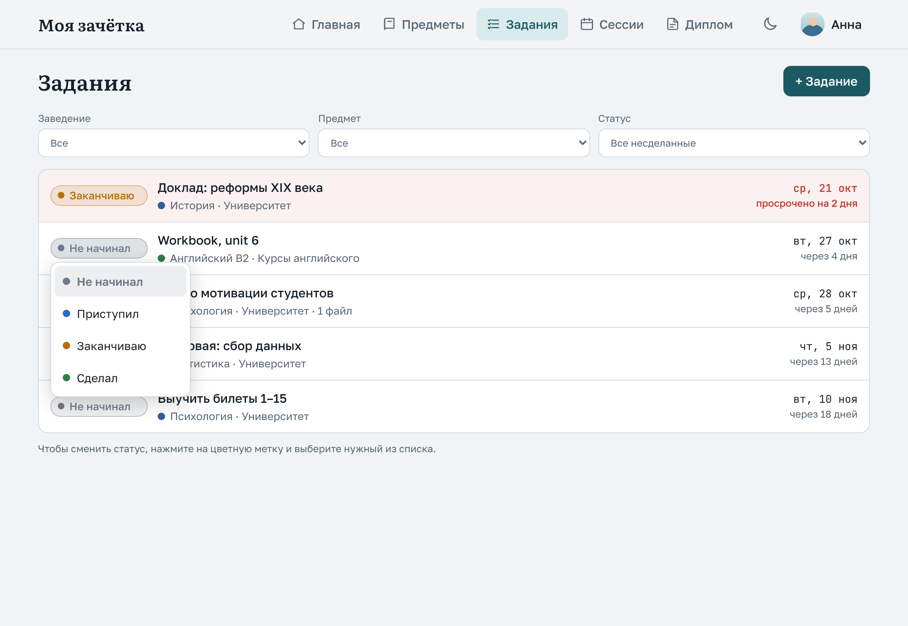
Смена статуса: нажмите на метку и выберите из списка
Чтобы открыть или изменить задание, нажмите на его название в любом списке. В том же окне его можно удалить.
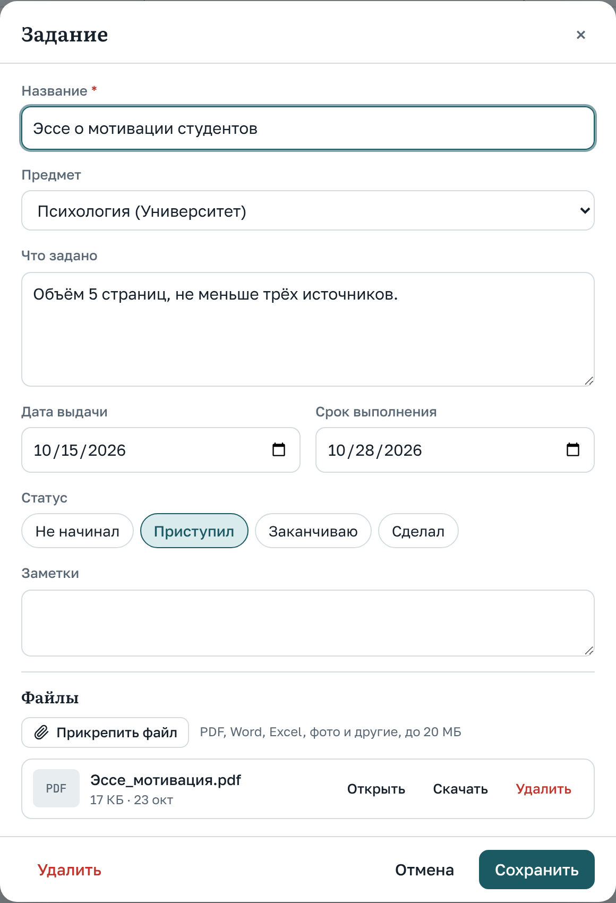
Окно задания
Файлы можно прикреплять к заданию, к предмету и к диплому. Подходят PDF, Word, Excel, фото и многие другие форматы, каждый файл до 20 МБ. Всего на одного человека отводится 500 МБ.
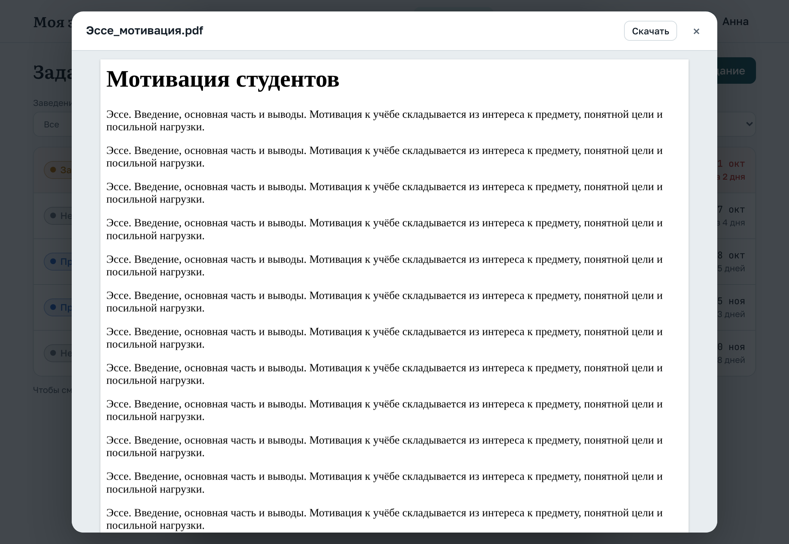
PDF открыт в окне просмотра. Кнопка «Скачать» вверху, крестик закрывает окно
Добавьте сессию («+ Сессия»): заведение, название и даты начала и конца. Затем внесите в неё экзамены, зачёты и консультации кнопкой «+ Экзамен или зачёт»: предмет, вид, дату, время и аудиторию.
Справа на карточке сессии виден обратный отсчёт: сколько дней до начала, а во время сессии сколько дней до конца. Прошедшие сессии убираются в отдельный список внизу страницы.
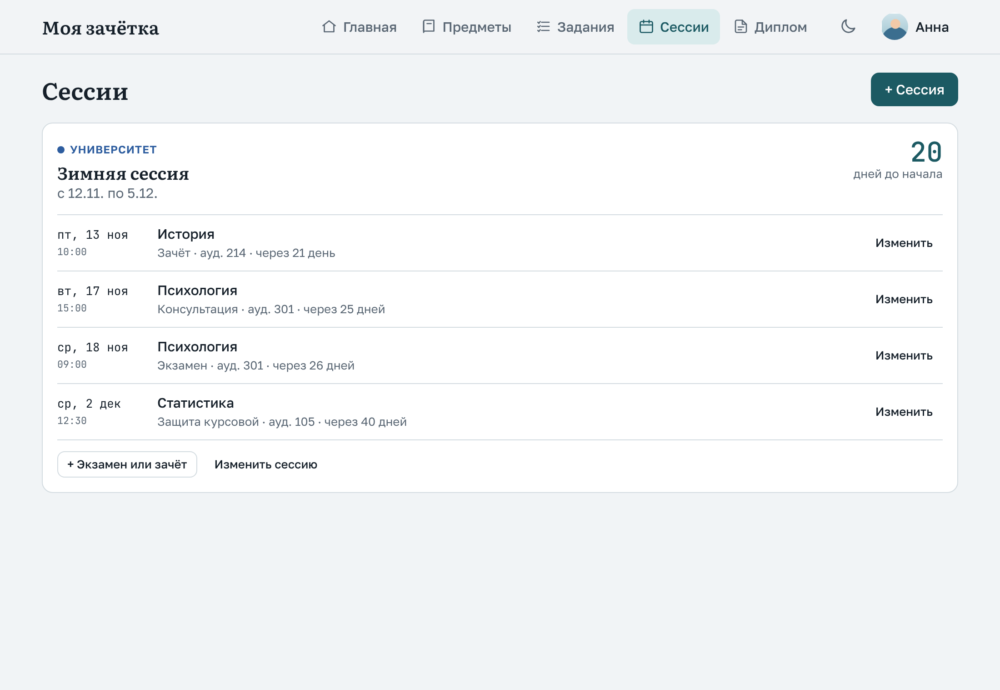
Сессия с расписанием экзаменов
Если вы пишете дипломную или курсовую работу, заведите её в разделе «Диплом»: тема, научный руководитель, даты сдачи и защиты. Если работ несколько, у каждой будет своя вкладка.
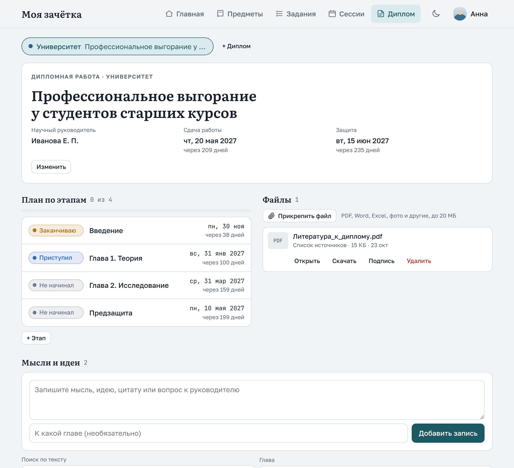
Диплом: тема, сроки, план по этапам, файлы и записи
Профиль открывается кнопкой с вашим фото или первой буквой имени в правом верхнем углу.
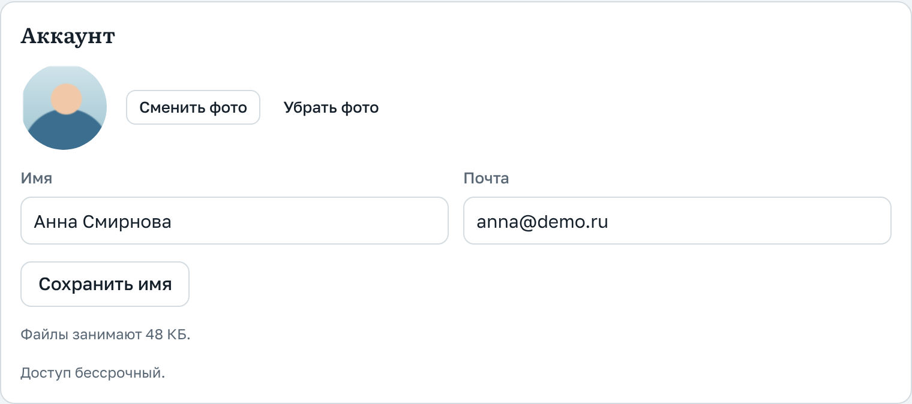
Имя и фото профиля
Время от времени нажимайте «Скачать копию (.zip)». В архиве все ваши записи и файлы. Его же можно загрузить обратно кнопкой «Загрузить копию». Загружайте одну копию один раз, иначе записи задвоятся.
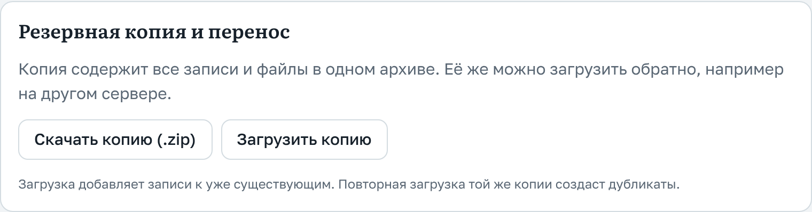
Зачётку можно поставить на экран телефона значком, и она будет открываться как обычное приложение, без адресной строки. Вкладки разделов на телефоне находятся внизу экрана.
В Chrome, Яндекс Браузере или Edge в адресной строке есть значок установки. Можно и просто сохранить сайт в закладки.
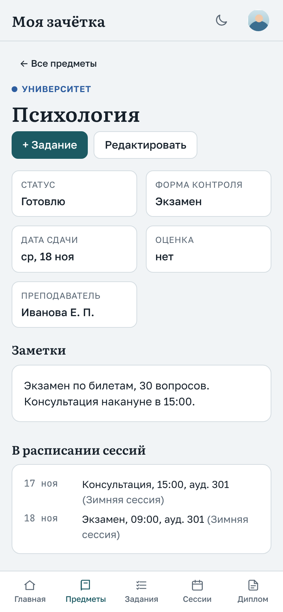
Страница предмета на телефоне
К зачётке можно подключить свою нейросеть: Claude, ChatGPT или Perplexity. После этого в чате с ней можно спрашивать, например, «что у меня по срокам на этой неделе?» или просить «добавь задание по психологии: эссе, срок 28 октября». Нейросеть видит только ваши данные. Добавлять и менять записи она может, удалять нет.
Подключённые нейросети видны там же. Кнопка «Отключить» сразу закрывает им доступ. Для ChatGPT и Perplexity нужна платная подписка. В Claude один такой коннектор можно подключить и на бесплатном тарифе.
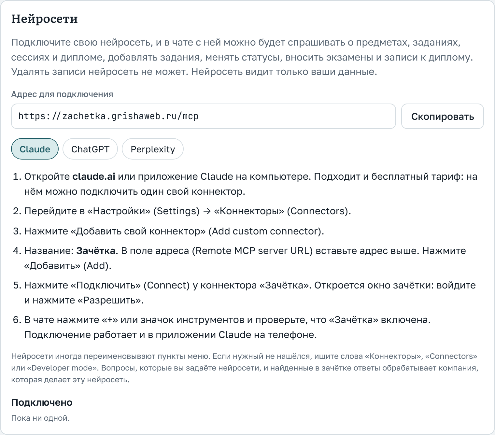
Доступ к зачётке может быть бессрочным или на определённый срок. Свой срок вы видите в «Профиле», в блоке «Аккаунт».
Моя зачётка · zachetka.grishaweb.ru · гайд для пользователей, октябрь 2026. Скриншоты сделаны на демо-данных.